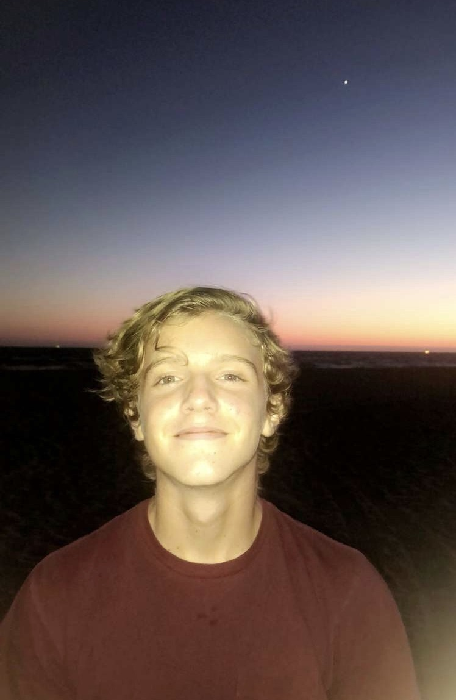

|  |
In the future I plan to become a software developer of some sort, whether it be for my own company or somebody else's. I am currently studying hard in high school in hopes of being admitted in to a UC school. I plan on studying computer science and possibly data science, as that field has many opportunities. I have learned HTML, CSS, and Python, and am now in the process of learning Java. I have spent some time developing my own projects at home, and this is something that I find very fun and hope to pursue it as a career. I am an extremely hard worker and I am also very organized with the way that I do things. I am also making the most of my time in highschool by choosing to challenge myself with rigourous classes. These courses are difficult and have helped me become very disciplined. The hard work and discipline that I apply to my schoolwork directly translates into computer science. Learning computer science requires a lot of discipline and the opportunities I have been provided have adequately prepared me. Besides being a hard worker, I am also a leader. In the summer of my junior year I had the opportunity to participate in the Link Crew program at Palm Desert High School. In this program we were tasked with introducing the incoming freshman to their new school. There were many challenges to overcome however this opportunity had provided me with the chance to improve myself as a leader overall. I've also attended the Rotary Youth Leadership Award 3 day camp at which I attended many seminars on leadership and worked with students from all around southern California to improve my leadership capabilities. |